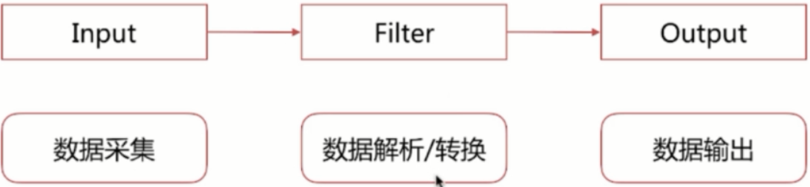

logstash入门
2019年1月5日
18:23
简介
- Data shipper
- ETL
- Extract
- Transform
- Load
架构简介
- 
- input
- stdin
- file
- redis
- beats
- kafka
- ……
- Filter
- grok
- mutate
- drop
- date
- Output
- stdout
- elasticsearch
- redis
- Kafka
- Pipeline
- Input-filter-output的3阶段处理流程
- 队列管理
- 插件生命周期管理
- Logstash event
- 内部流转的数据表现形式
- 原始数据在input被转换为event，在output event被转换为目标格式数据
- 在配置文件中可以对event中的属性进行增删改查


- 处理流程 -- input和output配置（codec.conf），bin/logstash -f codec.conf
- input { stdin { codec => line }}
- filter{}
- output { stdout { codec => json }}

queue的分类
- in memory
- 无法处理进程carsh、机器宕机等情况，会导致数据丢失
- persistent queue in disk
- 可处理进程crash等情况，保证数据不丢失
- 保证数据至少消费一次
- 充当缓冲区，可以替代kafka等消息队列的作用
- queue.type:persisted
- 默认是memory
- queue.max_bytes:4gb
- 队列存储最大数据量
pipeline worker thread
- pipeline.workers | -w
- pipeline线程数，即filter_output的处理线程数，默认是cpu核数
- pipeline.batch.size | -b
- batcher一次批量获取待处理文档数，默认125，可以根据输出进行调整，越大会占用越多的heap空间，可以通过jvm.options调整
- pipeline.batch.delay | -u
- batcher等待的时长，单位为ms
logstash配置文件
- logstash设置相关的配置文件（在conf文件夹中，setting files）
- logstash.yml logstash相关配置，比如node.name、path.data、pipeline.workers、queue.type等，这其中的配置可以被命令行参数中的相关参数覆盖
- node.name
- 节点名称，便于识别
- path.config
- 设定pipeline配置文件的目录
- path.data
- 持久化存储数据的文件夹，默认是logstash home目录下的data
- path.log
- 设定pipeline日志文件的目录
- pipeline.workers
- 设定pipeline的线程数(filter+output)，优化的常用项
- pipeline.batch.size/delay
- 设定批量处理数据的数目和延迟
- queue.type
- 设定队列类型，默认是memory
- queue.max_bytes
- 队列总容量，默认是1g
- jvm.options修改jvm相关参数，比如修改heap size等
pipeline配置文件
- 定义数据处理流程的文件，以.conf结尾
- 用于配置input、filter和output插件，框架如下所示：
- input{}
filter{}
output{}
- pipeline配置语法
- 主要有如下的数值类型：
- 布尔类型boolean
- isFailed => true
- 数值类型number
- port => 33
- 字符串类型string
- name => "Hello world"
- 数组array/list
- users => [{id => 1, name => bob}, {id => 2, name => jane}]
- path => ["/var/log/messages", "/var/log/*.log"]
- 哈希类型hash
- match => {
"field1" => "value1"
"field2" => "value2"
}
- 注释
- 井号
- 在配置中可以引用logstash event的属性（字段），主要有如下两种形式：
- 直接引用字段值field reference
- 使用[]即可，嵌套字段可以多层[]即可

- 在字符串中以sprintf方式引用
- 使用%{}来实现
 "request is %{request}" req ua = > "ua is %{[ual[os])'" height="217" width="600"/>
"request is %{request}" req ua = > "ua is %{[ual[os])'" height="217" width="600"/>- 支持条件判断语法，从而扩展了配置的多样性，主要格式如下：

- 表达式主要包含如下操作符：
- 比较：==、!=、<、>、<=、>=
- 正则是否匹配：=~、!~
- 包含（字符串或数组）：in、not in
- 布尔操作符：and、or、nand、xor、!
- 分组操作符：()
- if [action] == "login"
- if [loglevel] == "ERROR" and [deployment] == "production"
- if [foo] in [foobar]
- if [foo] in "foo"
- if "hello" in [greeting]
- if [foo] in ["hello", "world", "foo"]
- if !("foo" in ["hello", "world"])
- if "_grokparsefailure" not in [tags]
logstash命令行配置项
- --node.name
- -f --path.config pipeline路径，可以是文件或文件夹
- --path.settings logstash配置文件夹路径，其中要包含logstash.yml
- -e --config.string指明pipeline内容，多用于测试使用
- -w --pipeline.workers
- -b --pipeline.batch.size
- --path.data
- --debug
- -t --config.test_and_exit
logstash配置方式建议
- 线上环境推荐采用配置文件的方式来设定logstash的相关配置，这样可以减少犯错的机会，而且文件便于进行版本化管理
- 命令行形式多用来进行快速的配置测试、验证、检查等
logstash多实例运行方式
- bin/logstash --path.settings instance1
- bin/logstash --path.settings instance2
- 不同instance中修改logstash.yml，自定义path.data，确保其不相同即可
input plugin
- input插件指定数据输入源，一个pipeline可以有多个input插件，我们主要讲解下面的几个input插件：
- stdin，最简单的输入，从标准输入读取数据，通用配置为：
- codec类型为codec
- type类型为string，自定义该事件的类型，可用于后续判断
- tags类型为array，自定义该事件类型，可用于后续判断
- add_field类型为hash，为该事件添加字段
 "std" add field = > {"key" = > "value") output{ stdout { codec = > •rubydebug" height="369" width="316"/>
"std" add field = > {"key" = > "value") output{ stdout { codec = > •rubydebug" height="369" width="316"/>
 " std “ "@version = > "test" message "@timestamp = > 2018 ． 03 · 06T16 ： 19 ： 20 ． 841 乙 "key" = > ''value" •tags" [ 0 ] •test" "host" = > "MacBook-Pro-2 」 ocal"" height="239" width="348"/>
" std “ "@version = > "test" message "@timestamp = > 2018 ． 03 · 06T16 ： 19 ： 20 ． 841 乙 "key" = > ''value" •tags" [ 0 ] •test" "host" = > "MacBook-Pro-2 」 ocal"" height="239" width="348"/>
- file
- 从文件读取数据，如常见的日志文件。文件读取通常要解决几个问题：
- 文件内容如何只被读取一次，即重启LS时，从上次读取的位置继续
- sincedb
- 如何即时读取到文件内容
- 定时检查文件是否有更新
- 如何发现新文件并进行读取
- 可以，定时检查新文件
- 如果文件发生了归档(rotation)操作，是否影响当前的内容读取
- 不影响，被归档的文档内容可以继续被读取
- 基于filewatch的ruby库实现
- path类型为数组，指明读取的文件路径，基于glob匹配语法
- path => ["/var/log/**/*.log", "/var/log/message"]
- exclude类型为数组排除不想监听的文件规则，基于glob匹配语法
- exclude => "*.gz"
- sincedb_path类型为字符串，记录sincedb文件路径
- start_position类型为字符串，begging or end，是否从头读取文件
- stat_interval类型为数值，单位秒，定时检查文件是否有更新，默认1秒
- discover_interval类型为数值，单位秒，定时检查是否有新文件待读取，默认15秒
- ignore_older类型为数值，单位秒，扫描文件列表时，如果该文件上次更新时间超过设定的时长，则不做处理，但依然会监控是否有新内容，默认关闭
- close_older类型为数值，单位秒，如果监听的文件在超过该设定的时间内没有新内容，会被关闭文件句柄，释放资源，但依然会监控是否有新内容，默认3600秒，即1个小时
- kafka，kafka是最流行的消息队列，也是elastic stack架构中常用的，使用相对简单
- input {

kafka {
zk_connect => "kafka:2181"
group_id => "logstash"
topic_id => "apache_logs"
consumer_threads => 16
}
}
- glob匹配语法
- 主要包含如下几种匹配符：
- *匹配任意字符，但不匹配以"."开头的隐藏文件，匹配这类文件时要使用.*来匹配
- ** 递归匹配子目录
- ? 匹配单一字符
- [] 匹配多个字符，比如[a-z]、[^a-z]
- {} 匹配多个单词，比如{foo,bar,hello}
- \ 转义符号
- "/var/log/*.log"
- 匹配/var/log目录下以.log结尾的文件
- "/var/log/**/*.log"
- 匹配/var/log所有子目录下以.log结尾的文件
- "/var/log/{app1,app2,app3}/*.log"
- 匹配/var/log目录下app1、app2、app3目录中以.log结尾的文件
Codec plugin
- Codec plugin作用于input和output plugin，负责将数据在原始与logstash event之间转换，常见的codec有：
- plain 读取原始内容
- dots 将内容简化为点进行输出
- rubydebug 将logstash events按照ruby格式输出，方便调试
- line 处理带有换行符的内容
- json 处理json格式的内容
- multiline 处理多行数据的内容
- 当一个event的message由多行组成时，需要使用该codec，常见情况是堆栈日志信息处理，如下所示：

- 主要设置参数如下：
- pattern设置行匹配的正则表达式，可以使用grok
- what previous|next，如果匹配成功，那么匹配行归属上一个事件还是下一个事件
- negate true or false是否对pattern的结果取反
filter plugin
- filter是logstash功能强大的主要原因，它可以对logstash event进行丰富的处理，比如解析数据、删除字段、类型转换等等，常见的有如下几个：
- date 日期解析
- 将日期字符串解析为日期类型，然后替换@timestamp字段或者指定的其他字段

 " 1 " "logdate":"Jan 01 2018 12 ： 02 ： 08 “ "host" = > "MacBook-Pro-2.local" "logdate" = > "Jan 01 2018 12 ： 02 ： 08 “ "@timestamp" = > 2018 · 01 · 01T04 ： 02 ： 08 ． 000Z" height="121" width="600"/>
" 1 " "logdate":"Jan 01 2018 12 ： 02 ： 08 “ "host" = > "MacBook-Pro-2.local" "logdate" = > "Jan 01 2018 12 ： 02 ： 08 “ "@timestamp" = > 2018 · 01 · 01T04 ： 02 ： 08 ． 000Z" height="121" width="600"/>
- match
- 类型为数组，用于指定日期匹配的格式，可以一次指定多种日期格式
- Match => ["logdate", "MMM dd yyyy HH:mm:ss", "MMM d yyyy HH:mm:ss", "ISO8601"]
- target
- 类型为字符串，用于指定赋值的字段名，默认是@timestamp
- timezone
- 类型字符串，用于指定时区
- grok 正则匹配解析
- grok语法如下：
- %{SYNTAX:SEMANTIC}
- SYNTAX为grok pattern的名称，SEMANTIC为赋值字段名称
- %{NUMBER:duration}可以匹配数值类型，但是grok匹配出的内容都是字符串类型，可以通过在最后指定为int或者float来强制转换类型。%{NUMBER:duration:float}
- 熟悉常见的一些pattern规则利于编写匹配规则
- https://github.com/logstash-plugins/logstash-patterns-core/tree/master/patterns
- 基于正则自定义匹配规则
- (?<service_name>[0-9a-z]{10,11})
 "(?
"(?[a-zO-9] output{stdout{codec= > rubydebug}}" height="271" width="389"/> - 自定义grok pattern
- pattern_definitions参数，以键值对的方式定义pattern名称和内容
- pattern_dir参数，以文件的形式被读取
 "%{SERVICE:service}" p atte rn definitions = > { "SERVICE"=>"[a-zO-91{IO,II)"" height="330" width="394"/>
"%{SERVICE:service}" p atte rn definitions = > { "SERVICE"=>"[a-zO-91{IO,II)"" height="330" width="394"/>- match匹配多种样式
 [ "Duration: %{NUMBER:duration}", "Speed: 96{NUMBER:speed}" ] } }" height="114" width="600"/>
[ "Duration: %{NUMBER:duration}", "Speed: 96{NUMBER:speed}" ] } }" height="114" width="600"/>- overwrite
 "%{SYSLOGBASE} %{DATA:message}" } overwrite = > [ •message" ]" height="188" width="600"/>
"%{SYSLOGBASE} %{DATA:message}" } overwrite = > [ •message" ]" height="188" width="600"/>- tag_on_failure
- 默认是_grokparsefailure，可以基于此做判断
- 调试建议
- 正则表达式
- grok调试
- http://grokdebug.herokuapp.com/
- http://grokconstructor.appspot.com/
- x-pack grok debugger
- dissect 分割符解析
- 基于分割符原理解析数据，解决grok解析时消耗过多cpu资源问题
![计算机生成了可选文字: %{clientip) %{ident} %{auth} [%{timestamp}]](logstash入门_files/Image [17].png)
- dissect的应用有一定的局限性
- 主要适用于每行格式相似且分隔符明确简单的场景
- dissect语法比较简单，有一系列字段(field)和分隔符(delimiter)组成
- %{} 字段
- %{} 之间是分隔符


- dissect可以自动处理空的匹配值
- dissect分割后的字段值都是字符串，可以使用convert_datatype属性进行类型转换

- mutate 使用最频繁的操作，可以对字段进行各种操作，比如重命名、删除、替换、更新等，主要操作如下：
- convert 实现字段类型转换，类型为hash，仅支持转换为integer、float、string和boolean
- filter{
mutate{
convert => { "age" => "integer" }
}
}
- gsub 对字段内容进行替换，类型为数组，每3项为一个替换配置
- filter{
mutate{
gsub => [
"path", "/", "_",
"urlparams", "[\\?#-]", "."
]
}
}
- split/join/merge 字符串切割、数组合并为字符串、数组合并为数组
- 将字符串切割为数组
- filter{
mutate{
split => {"jobs" => ","}
}
}
- 将数组拼接为字符串
- filter{
mutate{
join => {"params" => ","}
}
}
- 将两个数组合并为1个数组，字符串会被转为1个元素的数组进行操作
- filter{
mutate{
merge => {"dest_arr" => "source_arr"}
}
}
- rename 字段重命名
- filter{
mutate{
rename => {"HOSTNAME" => "client_ip"}
}
}
- update/replace 更新字段内容，区别在于update只在字段存在时生效，而replace在字段不存在时会执行新增字段操作
 "%{source host}: My n ew messageø } 可 以 引 用 Logstash Event 中 的 字 段 值" height="201" width="600"/>
"%{source host}: My n ew messageø } 可 以 引 用 Logstash Event 中 的 字 段 值" height="201" width="600"/>- remove_field 删除字段
- filter{
mutate{
remove_field => ["message"]
}
}
- json 按照json解析字段内容到指定字段中
 msg_Json" height="162" width="413"/>
msg_Json" height="162" width="413"/>- geoip 增加地理位置数据，常用插件，根据ip地址提供对应的地域信息，比如经纬度、城市名等，方便进行地理数据分析
- filter{
geoip{
source => "ip"
}
}
- ruby 最灵活插件，利用ruby代码来动态修改logstash event
- filter{
ruby{
code => 'size = event.get("decription").size;
event.set("description_size","size")'
}
}
output plugin
- stdout，输出到标准输出，多用于调试
- output{
stdout{
codec => rubydebug
}
}
- file，输出到文件，实现将分散在多地的文件统一到一处的需求，比如将所有web机器的web日志收集到1个文件中，从而方便查阅信息
 line { fo r at = > "%{message}") 默 认 输 出 json 格 式 的 数 据 ， 通 过 format 可 以 输 出 原 始 格 式" height="292" width="421"/>
line { fo r at = > "%{message}") 默 认 输 出 json 格 式 的 数 据 ， 通 过 format 可 以 输 出 原 始 格 式" height="292" width="421"/>- elasticsearch，输出到elasticsearch，是最常用的插件，基于http协议实现
 "nginx-%{+YYYY.MM.dd}" template = > "Jnginx-template.json" template_name = > "nginx_template" template overwrite = > true" height="173" width="600"/>
"nginx-%{+YYYY.MM.dd}" template = > "Jnginx-template.json" template_name = > "nginx_template" template overwrite = > true" height="173" width="600"/>
调试的配置建议
- 调试阶段建议大家使用如下配置：
- http做input，方便输入测试数据，并且可以结合reload的特性（stdin无法reload）
- stdout做output，codec使用rubydebug，即时查看解析结果
- 测试错误输入情况下输出，以便对错误情况进行处理
- input{http{port=>7474}}
filter{}
output{stdout{codec=>rebydebug}}
处理建议
- @metadata特殊字段，其内容不会输出在output中
- 适合用来存储做条件判断、临时存储的字段
- 相比remove_field有一定的性能提升
![计算机生成了可选文字: input { stdin { } } filter { mutate { add-field = > { '[@metadata][debug]• = > true } } mutate { add field = > {](logstash入门_files/Image [27].png) "This data will be in the output" } } output { if [@metadata][debug]{ stdout { codec = > rubydebug }" height="302" width="600"/>
"This data will be in the output" } } output { if [@metadata][debug]{ stdout { codec = > rubydebug }" height="302" width="600"/>
监控运维之api
- logstash提供了丰富的api来查看logstash的当前状态
已使用 Microsoft OneNote 2016 创建。